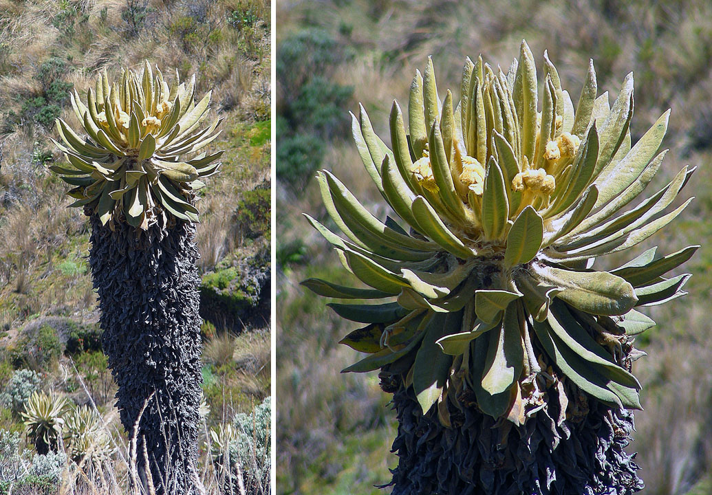
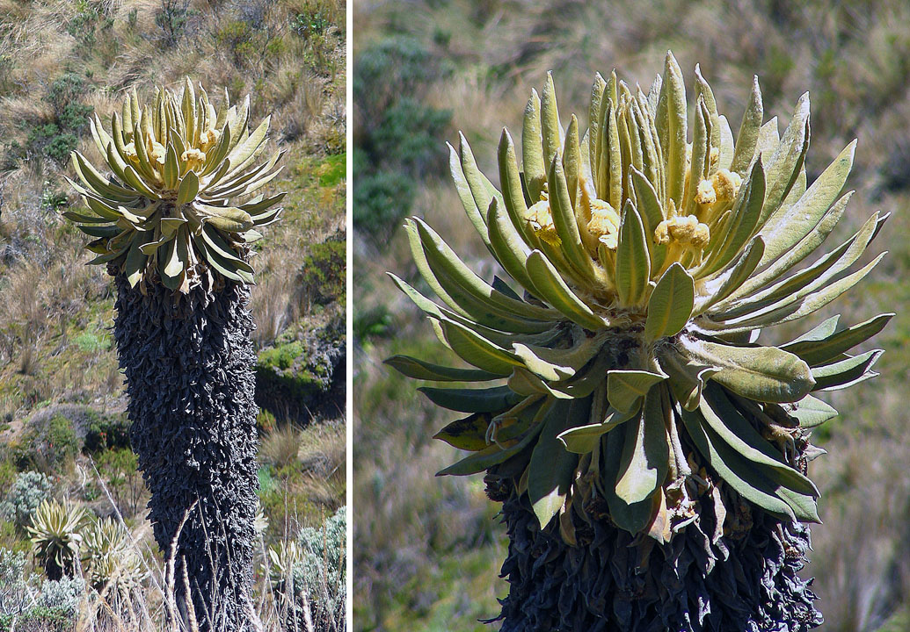

Una planta en los paramos
Juan Pablo blondell

Vegetación
Una de las plantas características de los páramos de venezuela es el frailejón el cual cumple la función de alimentar pájaros y captar y retener agua
Bibliografia
Juan Pablo blondell

Vegetación
Una de las plantas características de los páramos de venezuela es el frailejón el cual cumple la función de alimentar pájaros y captar y retener agua
Bibliografia